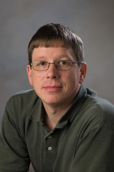
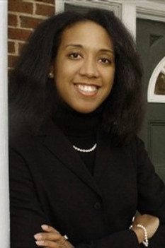
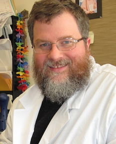

The MIT Residential Scholars @ Simmons Hall Program
Supported by a Gift from William and
Betsy Leitch
and
The Office of the Dean for Student Life
About the Residential Scholars Program
The Founders Group of Simmons Hall envisioned a combined residential and multi-use environment in which the undergraduates of MIT could integrate seamlessly with other members of the community. Simmons includes many common spaces on the first floor that are intended to welcome our colleagues from across campus and our neighbors from the Cambridge community. The Residential Scholars program is meant to enrich all of MIT with fresh ideas and perspectives brought to us by people who have had a wealth of life experiences that they are eager to share with the community. The program is populated mostly by faculty members on sabbatical leave from other institutions, artists, industry professionals visiting MIT and a limited number of MIT faculty members who have shown, by a long history of contributions to the community, a reason to participate in this program. The program is based in Simmons Hall but services the entire community.
The Scholars, working with the permanent House Team, typically run programs on Friday evenings. Since its inception in 2003, the financial resources to support the program primarily have been provided by the scholarly allowance associated with the William and Betsy Leitch Professorship, which is held by John Essigmann, one of the Housemasters of Simmons Hall. The community is indebted to the Leitchs for their generous support of this program.
Become a Residential Scholar!
Residential Scholars are professors, artists, and professionals with a visiting appointment at MIT, who live in Simmons Hall as part of our community. You can learn more about being a Residential Scholar at Simmons Hall here. Click here for the application form to become a Residential Scholar @ Simmons Hall. To apply to the Residential Scholars Program, please contact Simmons Housemaster Prof. Steven Hall at srhall@mit.edu.
Useful Links
Click here to see the Fall 2009 MIT Residential Scholars schedule. Click here to see the Spring 2009 MIT Residential Scholars schedule.
Click here to see profiles of the MIT Residential Scholars Emeriti.
The 2011-2012 MIT Residential Scholars

Prof. Gerd Kortemeyer
Gerd Kortemeyer received his Diplom ("Masters") in Physics from the University of Hannover, Germany, and his Ph.D. in Physics from Michigan State University. He is an Associate Professor of Physics Education at Michigan State University with a joint appointment between the Lyman Briggs College and the Department of Physics and Astronomy. He is also Director of the LON-CAPA Project (http://www.lon-capa.org/). His research interest is in physics education, with a particular focus on assessment and learner epistemology. He is on sabbatical at MIT, where he works with the group of David Pritchard on online assessment and learning content management. He lives in Simmons with his wife Anna and his children Daniel and Christine.

Prof. Andra Gillespie
Andra Gillespie is Associate Professor of Political Science at Emory University, and specializes in political mobilization and race, as well as competition between minority groups. Her current research focuses on the political leadership of the post-civil rights generation. Gillespie's experience as a pollster and consultant has helped shape her research into what works - and what doesn't - in minority politics today as new leadership emerges.
She is the editor of the recently released "Whose Black Politics? Cases in Post-Racial Black Leadership" (Routledge, 2010). The book features case studies of prominent black elected officials largely born after 1960 and asks whether the advent of a new generation of black political leadership will actually lead to substantive political changes in the black community.

Prof. Scott Nicholson
Scott Nicholson is an Associate Professor from the School of Information Studies at Syracuse University. For the 2011-2012 academic year, Scott will be a visiting Scholar in the Comparative Media Studies department, working primarily with the Singapore-MIT GAMBIT Game Lab. Scott's areas of focus are games in libraries and game design as a pedagogical tool. His interest is in face-to-face game experiences, such as board and card games and live-scale games. He is a published commercial board game designer and is was the host of Board Games with Scott, a Web-based board game review video series from 2005-2010. More about Scott can be found at http://scottnicholson.com.

Prof. Katharina Ribbeck
Katharina Ribbeck is an Assistant Professor of Bilogical Engineering at MIT. She received her Diploma in Biology from University of Heidelberg (Germany) in 1998 with highest distinction, then her PhD (with university-wide "best thesis" distinction) in Biology from the same institution in 2001. She was a postdoctoral fellow at the European Molecular Biology Laboratory in Heidelberg during the period 2002-2005, and is currently a Bauer Fellow in the Harvard University Center for Systems Biology. Dr. Ribbeck holds expertise in biological transport barriers (including the nuclear pore and the epithelial mucosal matrices), and is pursuing application of basic mechanistic understanding of these barriers to problems such as viral infection and bacterial colonization in diseases such as AIDS and cystic fibrosis.